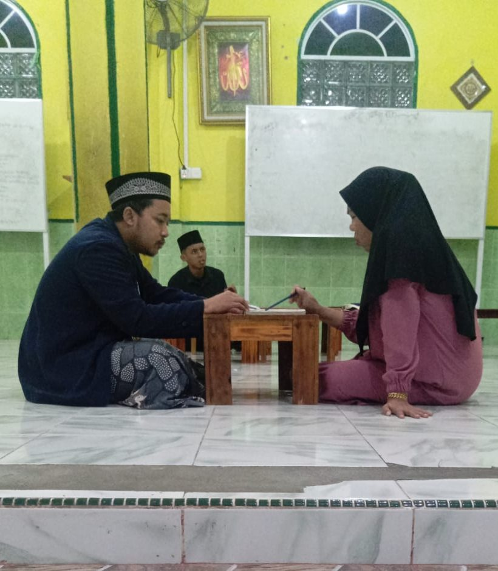

Tumbuh bersama warga Kampung Baru.
Sejarah berdirinya YASMA, visi dan misi yayasan, susunan pengurus, serta para asatidz yang membimbing santri setiap hari.
Sejarah
Jejak pengabdian di Pulau Penawar Rindu
Yayasan Asma Husnul Khatimah, yang dikenal sebagai YASMA, berkedudukan di Kampung Baru, Kecamatan Belakang Padang, Kota Batam. Yayasan ini lahir dari kepedulian para ustadz, tokoh agama, dan masyarakat pulau yang menginginkan tempat belajar Al-Qur'an yang terarah dan bermutu bagi anak-anak Belakang Padang.
Belakang Padang, yang dijuluki Pulau Penawar Rindu, dihuni masyarakat kepulauan yang memegang erat nilai Melayu dan keislaman. YASMA hadir lewat TPQ Husnul Khatimah dengan bimbingan tartil berstandar Badan Musyawarah Guru Al-Qur'an (BMGQ), serta pengasuhan anak-anak yatim piatu.
Hingga kini, santri-santriwati YASMA terus menuntaskan munaqasyah dan mengikuti wisuda, sebagian di antaranya meraih predikat juara di tingkat kecamatan dan Kota Batam.

Visi
“Terwujudnya generasi muslim yang Qur'ani, berilmu, berakhlakul karimah, mandiri, serta bermanfaat bagi agama, bangsa, dan masyarakat di Kepulauan Riau.”
Misi
- Menyelenggarakan pembelajaran Al-Qur'an yang sistematis, dengan perhatian pada ketepatan tajwid dan bacaan tartil.
- Menanamkan adab Islami, bakti kepada orang tua, dan kepedulian sosial.
- Mengelola infaq dan sedekah secara amanah untuk kebutuhan santri yatim dan kaum dhuafa.
- Mempererat silaturahmi dengan pemerintah, lembaga dakwah, dan seluruh lapisan masyarakat Belakang Padang.
Tata kelola
Susunan pengurus
Pengawasan
Dewan Pembina
Pengarah dan penasihat kebijakan yayasan.
Pimpinan
Ketua Yayasan
Penanggung jawab operasional dan manajemen yayasan.
Pendidikan
Kepala TPQ
Koordinator kegiatan belajar mengajar dan kurikulum.
Asatidz
Dewan guru & tenaga pendidik
Para pengajar Al-Qur'an, tahfidz, dan pembina akhlak santri di TPQ Husnul Khatimah.
-
Ustadz H. Ahmad Syafii, S.Pd.I
Kepala TPQ & penguji munaqasyah
Menjaga standar kurikulum Al-Qur'an, mengevaluasi munaqasyah BMGQ, dan membina guru TPQ.
-
Ustadz Rahmatullah, S.Q.
Koordinator tahfidz & talaqqi
Membimbing halaqah tahfidz Juz 'Amma dan surat pilihan lewat talaqqi, serta menjaga kelancaran hafalan santri.
-
Ustadzah Nurul Hidayah, S.Ag.
Guru tilawah & tajwid
Mengajar makharijul huruf, hukum tajwid, gharib, dan menyiapkan santri menghadapi munaqasyah.
-
Ustadz Muhammad Ridwan
Pembina Didikan Subuh & ibadah
Memandu Didikan Subuh, latihan azan, praktik sholat berjamaah, doa harian, dan adab santri.
-
Ustadzah Siti Aisyah, S.Pd.
Guru kelas Iqro' dasar
Mengenalkan huruf hijaiyah, harakat, dan adab belajar Al-Qur'an kepada santri pemula dengan sabar.
-
Umar Al-Faruq
Tata usaha & kesiswaan
Mengurus pendaftaran munaqasyah, data perkembangan santri, koordinasi dengan BMGQ, dan administrasi yayasan.